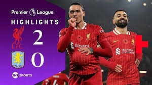
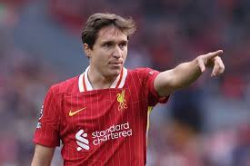
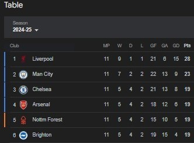
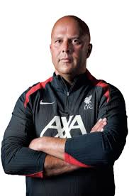

Liverpool Football Club is a professional football club based in Liverpool, England. The club competes in the Premier League, the top tier of English football. Founded in 1892, the club joined the Football League the following year and has played its home games at Anfield since its formation. Liverpool is one of the most valuable and widely supported clubs in the world.
Team Highlights
Mohamed Salah
The Egyptian King continues to dazzle fans with his incredible performances.So far, 10 goals 17 Appearances
Alisson Becker
One of the world's best goalkeepers, providing consistency and key saves. He has 3 clean sheets and 13 saves this season

Virgil van Dijk
A defensive colossus and a leader on the pitch for Liverpool. He won 49 duels this season
Darwin Nunez
Flexible forward Darwin Nunez was added to Liverpool FC's potent array of attacking options when he joined in the summer of 2022.
Recent News
The Reds wins against Aston Villa by 2-0
Liverpool FC 2 : 0 Aston Villa
Liverpool FC signs Juve star player with only £12 million
Liverpool has just signed Cheisa from Juventus after Motta said Cheisa is not part of his plan.
The Reds are top of league in both Premier League and Champions League
Liverpool FC is having a fanstastic season so far after winning all Champions League matches. Arsenal and Manchester City are not having a good season in both competitions. Can Arne win the league in his first season in Liverpool?
Liverpool FC signs Arne as their new Manager
Liverpool has just signed Arne to replace Klopp after he decided to leave after the season. Arend Martijn "Arne" Slot is a Dutch professional football manager and former player. He is the head coach of Premier League club Liverpool.
